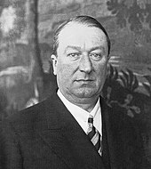

Bugatti
Ettore Bugatti
Automobiles Ettore Bugatti was a German then French car manufacturer of high-performance automobiles, founded in 1909 in the then-German city of Molsheim, Alsace by the Italian-born industrial designer Ettore Bugatti. The cars were known for their design beauty and for their many race victories. Famous Bugattis include the Type 35 Grand Prix cars, the Type 41 "Royale", the Type 57 "Atlantic" and the Type 55 sports car. The death of Ettore Bugatti in 1947 proved to be the end for the marque, and the death of his son Jean Bugatti in 1939 ensured there was not a successor to lead the factory. No more than about 8,000 cars were made. The company struggled financially, and released one last model in the 1950s, before eventually being purchased for its airplane parts business in 1963. In 1987, an Italian entrepreneur bought the brand and revived it as a builder of limited production exclusive sports cars based in Modena. In 1998, the Volkswagen Group bought the rights to the Bugatti marque and set up a subsidiary based back in Molsheim, Alsace.
 Caption
Caption